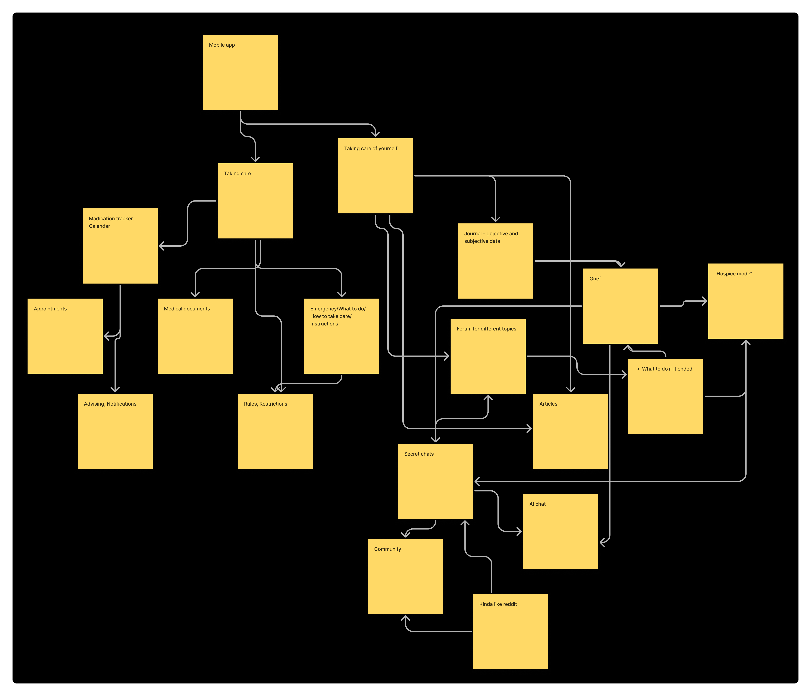

Research
To support my hypotheses and gather data, I used both primary and secondary research methods to explore the challenges faced by rural women caring for elderly relatives. A key finding was that they do not see themselves as carers but rather view these tasks as a duty. This research led to identifying four key pain points, offering deeper insights and potential solutions.
These pain points were the following:
- Isolation is a big problem in rural area.
- There is no one to talk to about frustration.
- Sensitive topics.
- These people have no proper training in nursing care.
- Managing someone else's life.
- Knowing that it's the last chapter in your loved one's life.
- Dealing with early grief.
- Doctor's visit and medication.
- Constant need for planning and administration
Although there are various software solutions for task management and optimization, as well as resources for self-care and mental well-being, there is no digital product specifically designed to support home caregivers for the elderly and address their unique needs.
Ideation map:
Solution helping in these problems:
- Community forum.
- Connect with other caregivers for support and sharing.
- AI Support & Articles & Podcasts.
- Personalized mental health advice and content from professionals.
- Meditation & Journaling.
- Space for emotional expression and mindfulness.
- Tracks general mood and alerts when outside help is needed.
- Calendar to track medications, appointments, and caregiving tasks.
- Data can be shared with other carers (family and friends).
“Why the name "Phoca"? It means seal in Latin. Associated with the Paro therapeutic robot. You can't look at a baby seal without feeling warmth and joy in your heart.”